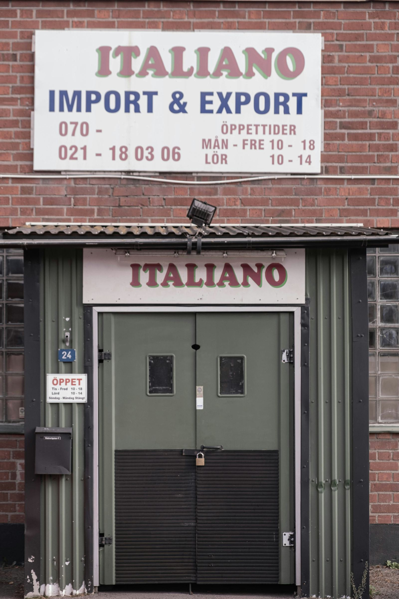
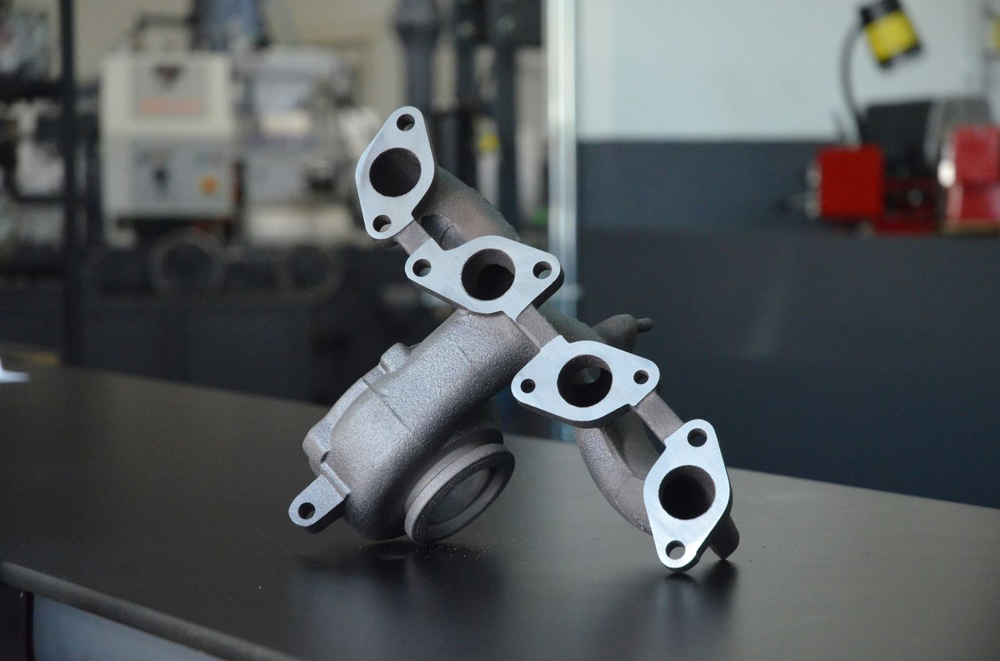

Discover the latest insights on Italian exports in 2023. Learn about the significant growth driven by sustainability and digitalisation.
Scopri le ultime novità sulle esportazioni italiane nel 2023. Approfondisci la significativa crescita trainata dalla sostenibilità e dalla digitalizzazione.

Sembra che nel 2023 le vendite oltreconfine abbiano superato i 660 miliardi di euro, con una crescita del 6,8% rispetto all'anno precedente. Questo è quanto emerge dal recente rapporto di Sace, che sottolinea come la sostenibilità e la digitalizzazione abbiano giocato un ruolo chiave in questo successo.
Secondo Alessandra Ricci, CEO di Sace, le imprese che investono in sostenibilità e digitalizzazione sono anche quelle che esportano di più e meglio. Il rapporto indica che il turismo ha dato una spinta significativa all'export di servizi, con una crescita prevista del 7% quest'anno. Le principali destinazioni per le vendite italiane sono ancora Germania, Stati Uniti, Francia e Cina, ma ci sono nuove opportunità emergenti in Paesi come India, Thailandia e Vietnam.
C'è anche una buona notizia per il settore ambientale: l'Italia si è mantenuta al secondo posto nell'UE per le esportazioni di beni ambientali, con una crescita attesa del 9,3% quest'anno e del 9,7% nel prossimo.
Per quanto riguarda i prodotti che stiamo esportando, l'Italia si distingue per la meccanica strumentale, come motori e generatori elettrici, quadri di distribuzione e strumenti di misurazione e controllo.

Inoltre, siamo leader anche nel settore degli apparecchi elettrici, con una forte presenza nel mercato delle auto ibride ed elettriche, batterie senza mercurio e biocarburanti.
Insomma, sembra che l'export italiano stia vivendo un momento di forte crescita, trainato dagli investimenti nelle tecnologie verdi e nell'innovazione digitale. Se stai pensando di imparare l'italiano, potresti anche voler conoscere meglio l'economia italiana e le sue prospettive future.
fonte: Sace: l’export italiano supera i 660 miliardi nel 2023.
Parole chiave
| Export | Prodotti o merci venduti da un paese ad altri paesi |
| Sostenibilità | Utilizzo di risorse in modo che possano essere usate nel futuro |
| Digitalizzazione | Utilizzo di tecnologie digitali, come computer e internet |
| Lezione | Sessione di insegnamento durante la quale si impara qualcosa |
| Tutor | Persona che fornisce istruzione o aiuto educativo |
| Esportazione | Atto di inviare beni o servizi da un paese ad un altro |
| Crescita | Aumento o sviluppo di qualcosa |
| Trainato | Essere spinto o portato da qualcosa |
| Vendite | Azione di vendere qualcosa |
| Italia | Paese situato nell'Europa meridionale |
| 2023 | Anno nel quale sono avvenuti determinati eventi |
| Significativa | Importante o notevole |
| Guidare | Portare o dirigere qualcosa verso una direzione specifica |
| Internazionali | Relativo a più di un paese o coinvolgente più paesi |
Esercizi
Domande
- Qual è stata la percentuale di crescita delle esportazioni italiane nel 2023 rispetto all'anno precedente?
- Secondo Alessandra Ricci, qual è il ruolo della sostenibilità e della digitalizzazione nelle esportazioni delle imprese italiane?
- Quali sono le principali destinazioni per le vendite italiane menzionate nell'articolo?
- Cosa indica il rapporto di Sace riguardo alle esportazioni di beni ambientali?
- Che tipo di prodotti l'Italia esporta nel settore degli apparecchi elettrici secondo il testo?